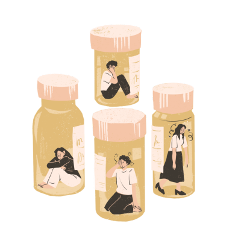

What is Addiction?

Addiction is a complex, chronic condition that affects the brain and behavior. It is characterized by compulsive substance use or behaviors despite negative consequences. Addiction can take many forms, including substance abuse (such as alcohol, drugs, or nicotine) and behavioral addictions (such as gambling, eating, or internet use).
Individuals with addiction often struggle to control their urges, leading to harmful consequences that impact their physical, mental, and emotional well-being, as well as relationships, work, and social life.
Symptoms of Addiction
The symptoms of addiction can vary depending on the type of addiction, but common signs include:
- Increased Tolerance: Needing more of the substance or behavior to achieve the same effect.
- Withdrawal Symptoms: Physical or emotional symptoms that occur when the substance or behavior is reduced or stopped.
- Loss of Control: Inability to reduce or stop the addictive behavior despite efforts to do so.
- Preoccupation: Constantly thinking about the substance or behavior or spending a lot of time on it.
- Negative Consequences: Experiencing problems in relationships, work, or health due to the addiction but continuing the behavior.
Recognizing these symptoms early can help individuals seek treatment and support before the addiction worsens.
Causes of Addiction
Addiction has a complex and multifactorial origin. Some of the key factors include:
- Genetics: Family history of addiction can increase the likelihood of developing an addiction.
- Environmental Factors: Growing up in an environment where substance use or addictive behaviors are prevalent can influence the development of addiction.
- Psychological Factors: Mental health disorders, such as anxiety, depression, or trauma, can increase the risk of developing addiction as individuals may turn to substances or behaviors as a way of coping.
- Peer Pressure: Social influences and peer pressure, especially during adolescence, can contribute to the initiation of addictive behaviors.
- Biological Changes: Addictive substances or behaviors can alter brain chemistry, reinforcing the cycle of addiction.
Treatment for Addiction
Treatment for addiction typically involves a combination of behavioral therapy, medications, and support from family and friends. Some common treatment options include:
- Behavioral Therapy: Therapy sessions, such as Cognitive Behavioral Therapy (CBT), help individuals recognize and change negative thought patterns and behaviors that contribute to addiction.
- Medication: In some cases, medications may be prescribed to help manage withdrawal symptoms, reduce cravings, or address underlying mental health issues.
- Support Groups: Groups like Narcotics Anonymous (NA) or Alcoholics Anonymous (AA) offer community support and a structured recovery process.
- Rehabilitation Programs: Inpatient or outpatient rehab programs provide intensive therapy and support to help individuals recover from addiction.
- Holistic Approaches: Yoga, mindfulness, and other stress-reduction techniques may be used alongside traditional treatment to promote long-term recovery.
With early intervention, individuals can recover from addiction and improve their overall well-being.